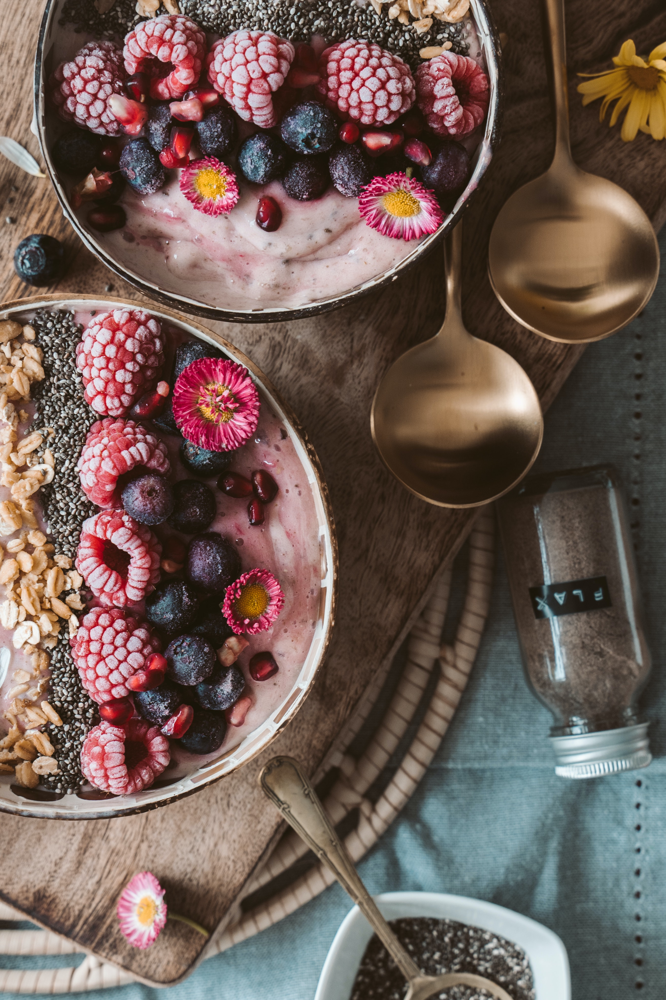

There a dozens of differnt potato varieties. They are usually described as early, second early and main crop.
There are dozens of different potato varieties. They are usually described as early, second early and main crop.
You can make fries and hashbrown with Potatoes
There are twenty types of different potatoes
There a dozens of differnt potato varieties. They are usually described as early, second early and main crop.
There a dozens of differnt potato varieties. They are usually described as early, second early and main crop.
There a dozens of differnt potato varieties. They are usually described as early, second early and main crop.
There a dozens of differnt potato varieties. They are usually described as early, second early and main crop.
There a dozens of differnt potato varieties. They are usually described as early, second early and main crop.
primary color
primary darker
primary lighter
secondary
Green forest
Winter nights! More Information


Sunday in Brooklyn
Juice Press Berry Good!

Yafa Cafe